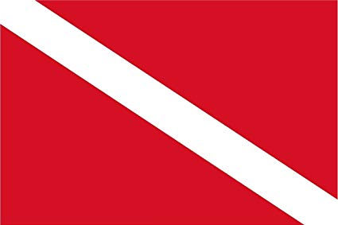
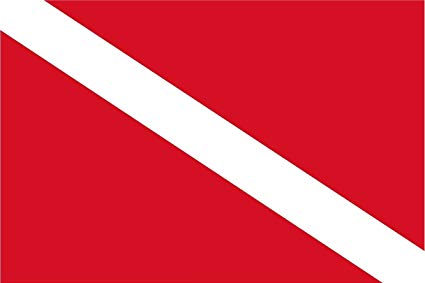
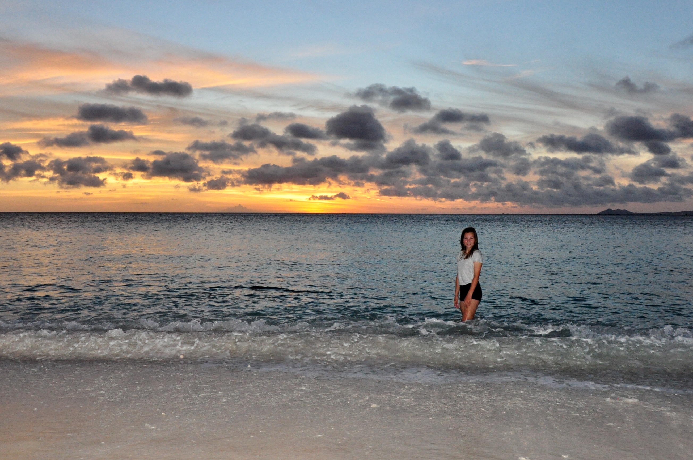
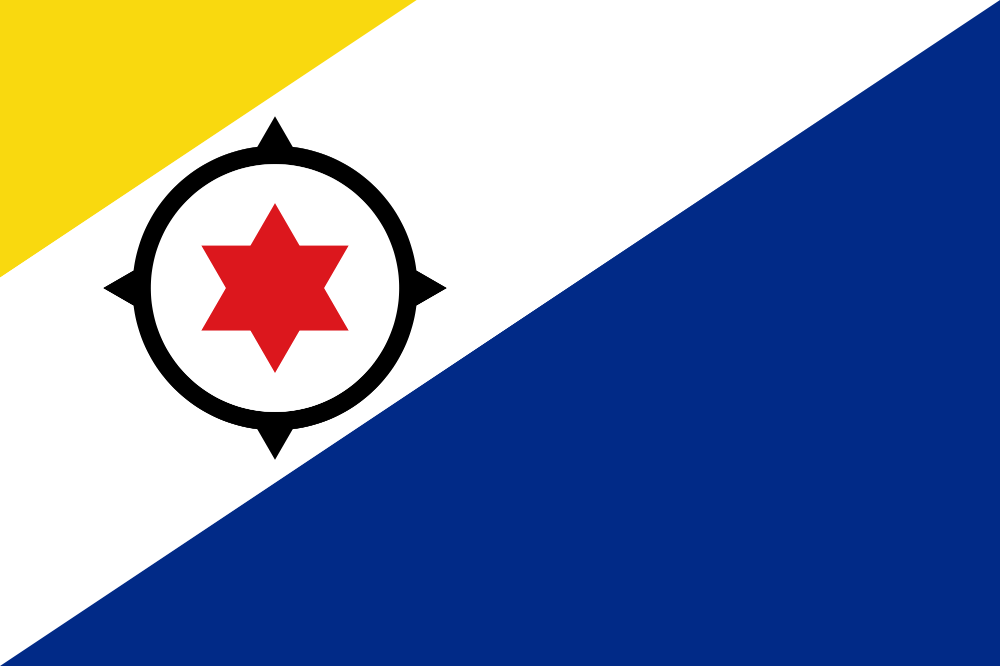

Duiken en snorkelen op Bonaire
 



Hallo, welkom op mijn website over duiken en snorkelen op Bonaire. Ik heb voor dit onderwerp gekozen, omdat ik duiken en snorkelen heel leuk vind en de leukste plek waar ik dit ooit heb gedaan was op Bonaire. Hier is namelijk nog veel koraal intact en ziet het er onder water heel erg mooi uit.